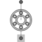
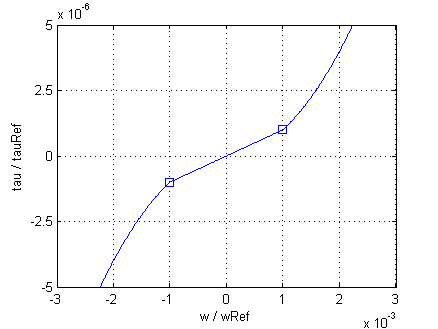

FrictionModel of angular velocity dependent friction losses |

|
Information
This information is part of the Modelica Standard Library maintained by the Modelica Association.
The friction losses are considered by the equations
tau / tauRef = (+w / wRef) ^ power_w for w > +wLinear - tau / tauRef = (-w / wRef) ^ power_w for w < -wLinear
with
tauRef * wRef = PRef
being the friction torque at the reference angular velocity
wRef. The exponent power_w is
approximately 1.5 for axial ventilation and approximately 2.0 for radial ventilation.
For stability reasons the friction torque tau is approximated by a linear curve
tau / tauLinear = w / wLinear
with
tauLinear = tauRef*(wLinear/wRef) ^ power_w
in the range -wLinear ≤ w ≤ wLinear with wLinear = 0.001 * wRef. The relationship of torque
and angular velocity is depicted in Fig. 1
|  |
Fig. 1: Friction loss torque versus angular velocity for power_w = 2 |
See also
If it is desired to neglect friction losses, set frictionParameters.PRef = 0 (this is the default).
Parameters (2)
| useHeatPort |
Value: false Type: Boolean Description: =true, if heatPort is enabled |
|---|---|
| frictionParameters |
Value: Type: FrictionParameters Description: Friction loss parameters |
Connectors (3)
| flange |
Type: Flange_a Description: Shaft end |
|
|---|---|---|
| support |
Type: Flange_a Description: Housing and support |
|
| heatPort |
Type: HeatPort_a Description: Optional port to which dissipated losses are transported in form of heat |
Components (1)
| frictionParameters |
Type: FrictionParameters Description: Friction loss parameters |
|---|
Used in Components (3)
|
Modelica.Electrical.Machines.Interfaces Partial model for all machines |
|
|
Modelica.Magnetic.FundamentalWave.Interfaces Partial model for induction machine |
|
|
Modelica.Magnetic.QuasiStatic.FundamentalWave.BasicMachines.BaseClasses Partial model for quasi static multi phase machines |